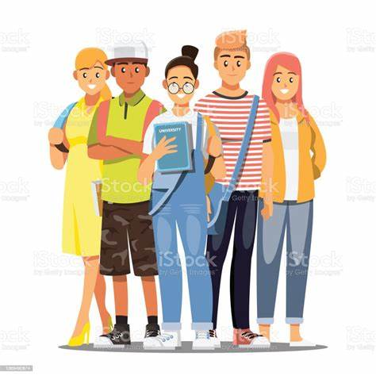

Lo que Conapred nos dice en el 2022 es que las personas jóvenes o adolescentes sufren más discriminación ya que la mayoría de la población joven sufre de pobreza por lo que mucha gente los excluye de oportunidades tanto laborales como educativas, también se les impide el conocimiento de sus derechos. Como menciona cepsin en el 2011 ahora veremos el impacto que este tiene bueno para empezar puedes sentir soledad que es al principio que empieza toda esta etapa, pero poco a poco esto se va aumentando, cada sentimiento se va haciendo más fuerte y esto tiene problemas más adelante ya que vas formando un carácter en base a lo que te hicieron y te empiezas a aislar, pero si es a mayor grado te entra la depresión.
| Como menciona cepsin en el 2011 ahora veremos el impacto que este tiene bueno para empezar puedes sentir soledad que es al principio que empieza toda esta etapa, pero poco a poco esto se va aumentando, cada sentimiento se va haciendo más fuerte y esto tiene problemas más adelante ya que vas formando un carácter en base a lo que te hicieron y te empiezas a aislar, pero si es a mayor grado te entra la depresión. |  |
| El Gobierno de México en el 2018 dijo que para promover la igualdad de género se puede hacer lo siguiente: Evitar el lenguaje sexista en documentos oficiales que hablen de género. Diseñar programas y políticas que promuevan la igualdad de acceso y de oportunidades a la alimentación, a la educación y a la atención médica entre niñas, niños y adolescentes; implementar acciones específicas para alcanzar la eliminación de prejuicios y estereotipos sexistas. |
| Acorde a lo que la organización panamericana de la salud menciona en el 2021 esto tiene consecuencias graves y de gran alcance para su salud, su bienestar y sus derechos humanos. Ya que esto puede llegar hasta un punto de atentar contra tu propia vida, llegar a usar drogas “para no sentir ningún tipo de daño” o llegar a generar rencor en ti y hacerle lo mismo a los demás. |
| Lo que Carpizo, J. dijo en el 2018 fue que entre los derechos hay varios que protegen específicamente a los adolescentes o que están hechos para ellos como por ejemplo según Caprizo,J (2018) algunos de los derechos que los protegen son el Derecho a la intimidad; Derecho a la seguridad jurídica y al debido proceso; Derechos de niñas, niños y adolescentes migrantes, Derecho de acceso a las tecnologías de la información y comunicación, así como a los servicios de radiodifusión y telecomunicaciones, incluido el de banda ancha e Internet. |  |
| Borbón, D. menciona en el 2005 que los resultados fueron: razones político-ideológicas (20%), enfermedades como HIV, epilepsia y otras estigmatizadas (17%). Les siguen la etnicidad (14%), la discapacidad (13%), la diversidad sexual (6%), el antisemitismo (5%), razones económicas-sociales (3%) y género (1%). El 18 % restante: otros motivos. De acuerdo con el Ministerio de Relaciones Exteriores, Comercio Internacional y Culto que mencionó en el 2022 que si la discriminación se está haciendo en la escuela lo más importante es dar aviso a los adultos para que ellos les digan a las autoridades del colegio y empezar a tomar acciones para que esto no pase. |